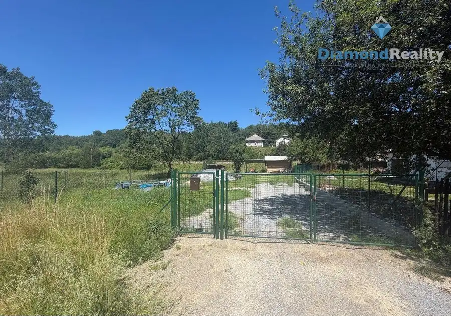
Aktuálna ponuka
16 nehnuteľností, predovšetkým pozemky, rodinné domy, komerčné priestory. Každá má vlastnú stránku s fotkami, popisom a mapou.
Prezrieť ponukuSlavomíra BadžováRealitná maklérka
Realitná maklérka · Diamond Reality
Predaj a prenájom nehnuteľností · Košice, Kysak, Kráľovský Chlmec
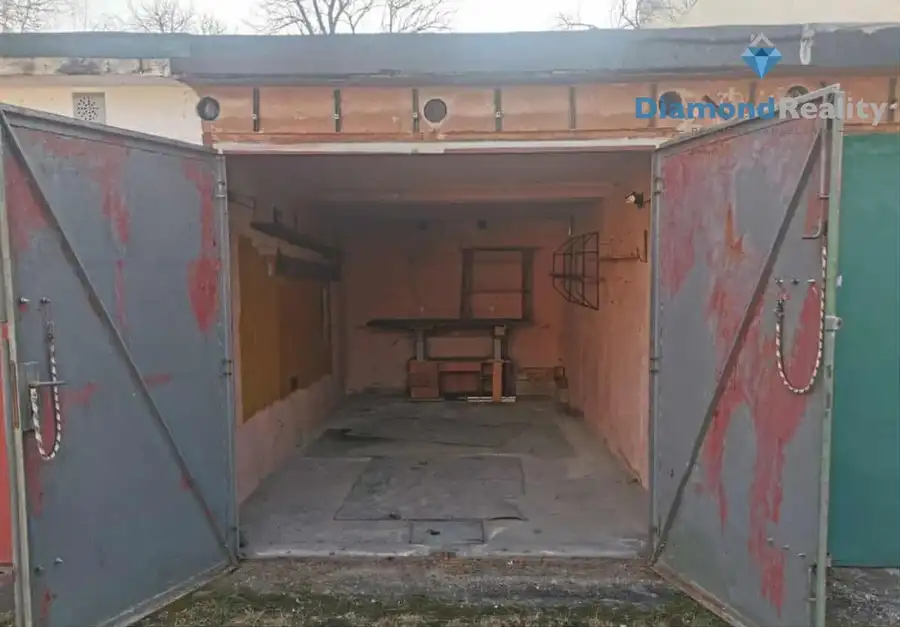
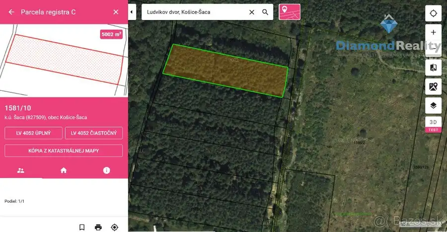
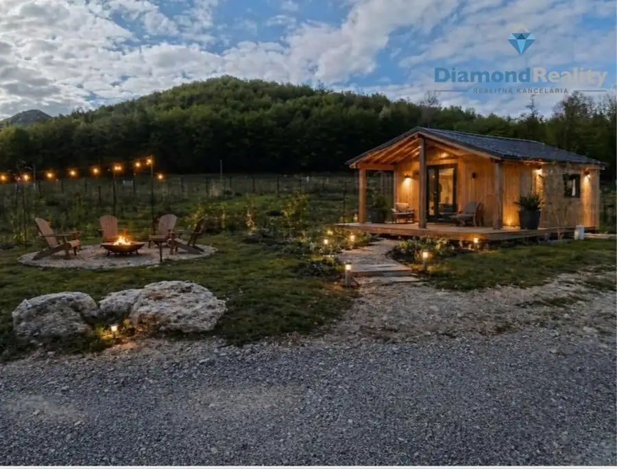
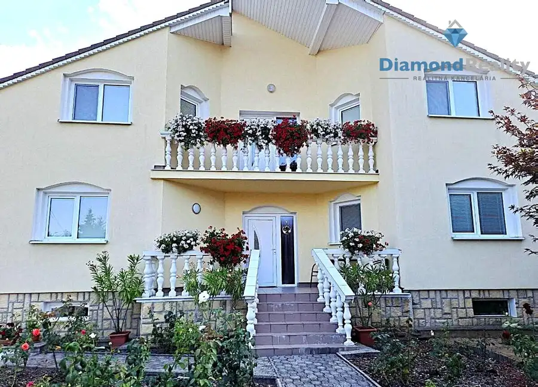
Dom10 192 990 €Na Predaj rodinný dom , Kráľovský Chlmec, Trebišov Kráľovský Chlmec 226.39 m² Na predaj priestranný dvojpodlažný rodinný dom s dvojgarážou a veľkým pozemkom. Ponúkam na predaj dvojpodlažný rodinný dom s dvojgarážou v krásnej a…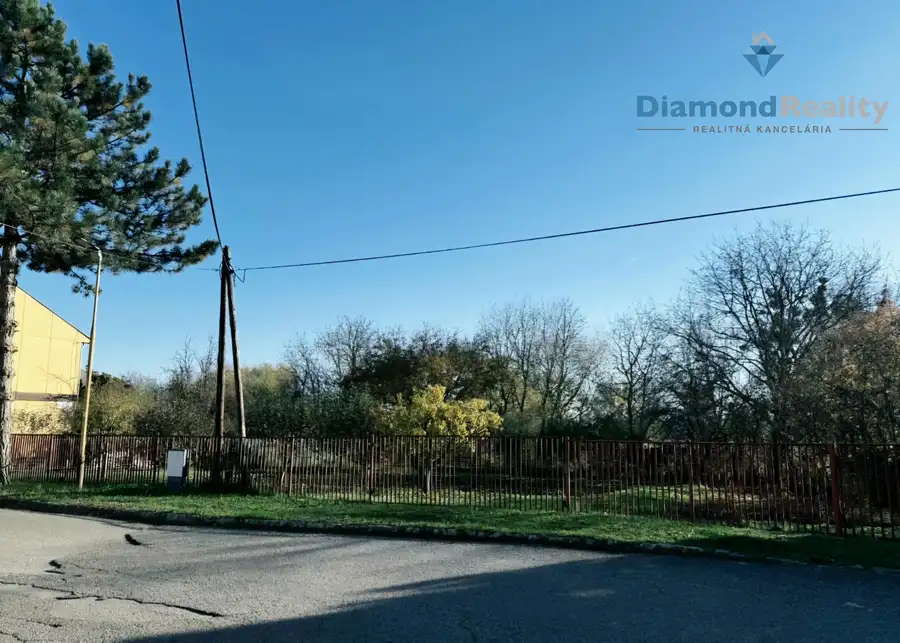
Pozemok3 46 990 €Na predaj rovinatý stavebný pozemok,ulica Janka Kráľa, Okále, Michalovce Veľké Kapušany 690 m² Stavebný pozemok Janka Kráľa – Okále STAVEBNÝ POZEMOK 690 m² V TICHEJ LOKALITE – JANKA KRÁĽA, OKÁLE Váš vysnívaný dom môže začať práve tu!Ponúkam na…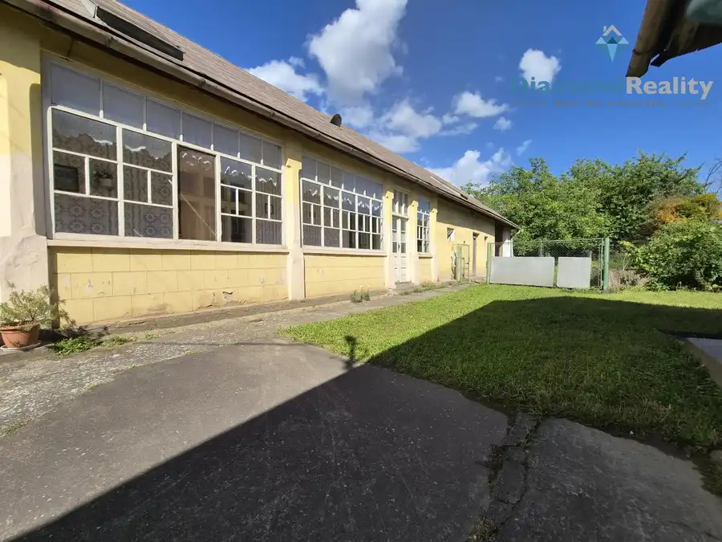
Dom10 99 990 €Na predaj Rodinný dom, Rybárska ulica, Veľká Ida ,Košice - Okolie Veľká Ida 279 m² Ponúkame Vám Dom s obrovským pozemkom a hospodárskym zázemím len 18 km od Košíc – Veľká IdaHľadáte miesto, kde máte pokoj, priestor a slobodu tvoriť…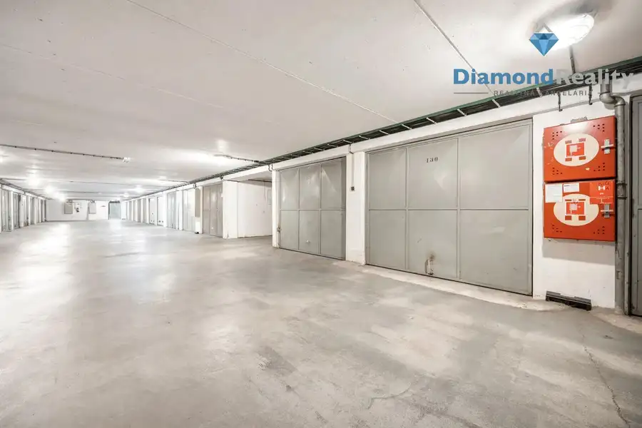
Komerčné priestory 36 990 €Na predaj garáž v parkovacom dome, Adlerová ulica, Košice Dargovských hrdinov, Košice 18 m² GARÁŽ NA PREDAJ – SKVELÁ LOKALITA NA ADLEROVEJ V KOŠICIACH!Hľadáte vlastné parkovacie miesto bez starostí s parkovaním? Alebo potrebujete praktický…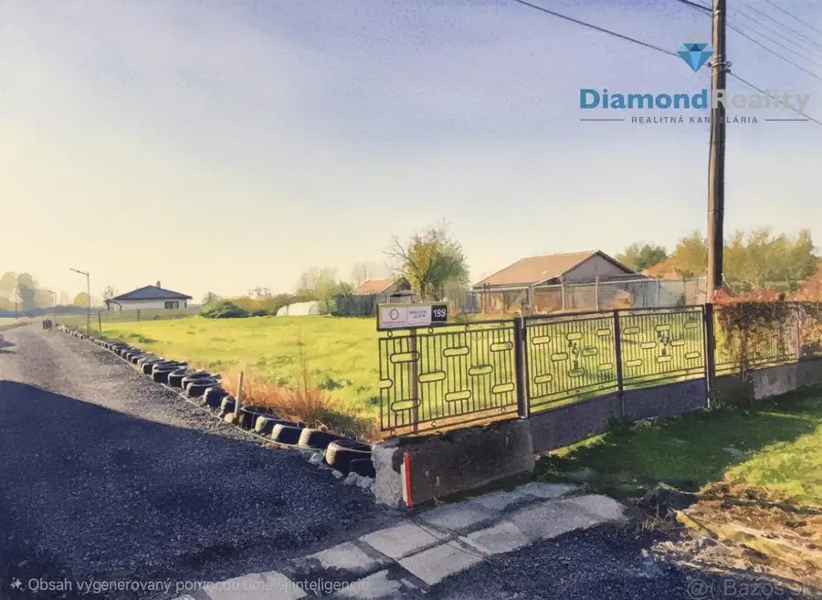
Pozemok 35 990 €Na predaj stavebný pozemok rovinatý, Kapušianske Kľačany, Veľké Kapušany Kapušianske Kľačany 1303 m² Stavebný pozemok 1 303 m² – Kapušianske Kľačany VEĽKÝ STAVEBNÝ POZEMOK 1 303 m² | KAPUŠIANSKE KĽAČANY | 2 KM OD VEĽKÝCH KAPUŠIAN Pokojné miesto pre…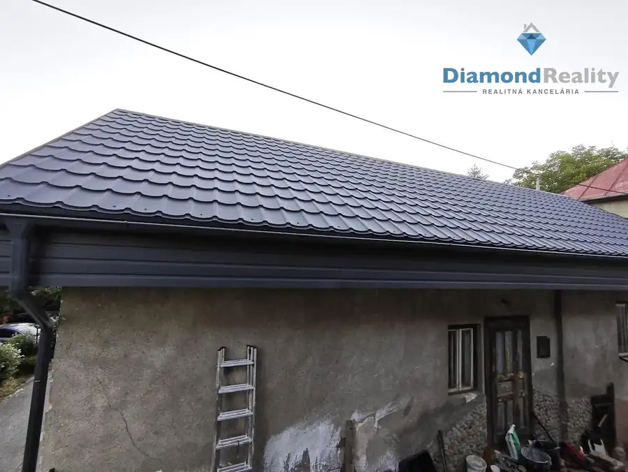
Dom6 162 990 €Na predaj Rodinný Dom Ťahanovce Ťahanovce, Košice 58.86 m² Na predaj 4-izbový dom na predaj – Na Hájiku 34, KošicePonúkame na predaj 4-izbový dom (2+kk) , ktorý sa nachádza na pozemku o rozlohe 97 m². Dom je…Tomuto výberu zatiaľ nezodpovedá žiadna ponuka. Napíšte mi, čo hľadáte.
Volám sa Slavomíra Badžová. Som realitná maklérka kancelárie Diamond Reality a pôsobím predovšetkým v lokalitách Košice, Kysak, Kráľovský Chlmec a Veľké Kapušany (Košický kraj).

16 nehnuteľností, predovšetkým pozemky, rodinné domy, komerčné priestory. Každá má vlastnú stránku s fotkami, popisom a mapou.
Prezrieť ponuku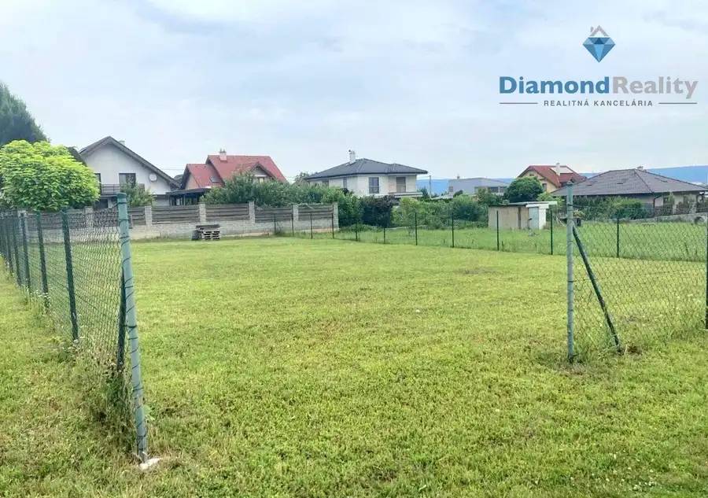
Košice, Kysak, Kráľovský Chlmec, Veľké Kapušany, Veľká Ida a okolie. Ponuku si môžete prezrieť podľa lokality.
Nehnuteľnosti v lokalite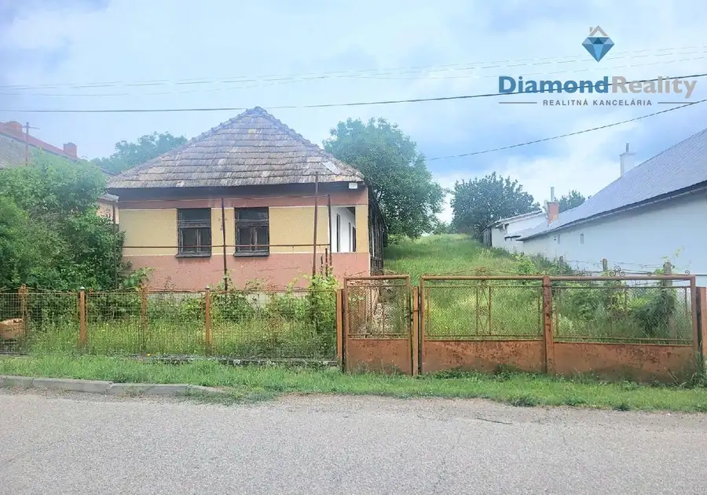
Odhad trhovej ceny, príprava prezentácie, obhliadky, zmluvy a odovzdanie nehnuteľnosti.
Dohodnúť stretnutieKaždý špendlík je jedna nehnuteľnosť z mojej ponuky. Kliknite a pozrite sa.
© prispievatelia OpenStreetMap
Na čo sa pýtate najčastejšie, skôr než sa stretneme.
Odhad trhovej ceny vychádza z aktuálnych ponúk a predajov v lokalite, nie z cenníkových tabuliek. Podmienky Vám poviem pri prvom telefonáte.
Najprv obhliadka a odhad ceny, potom príprava prezentácie (fotografie, popis, inzercia), obhliadky so záujemcami, rezervačná zmluva, kúpna zmluva, návrh na vklad do katastra a odovzdanie nehnuteľnosti. O každom kroku viete vopred.
Najrýchlejšie cez WhatsApp alebo telefón. Termín stretnutia alebo obhliadky dohodneme podľa Vás.